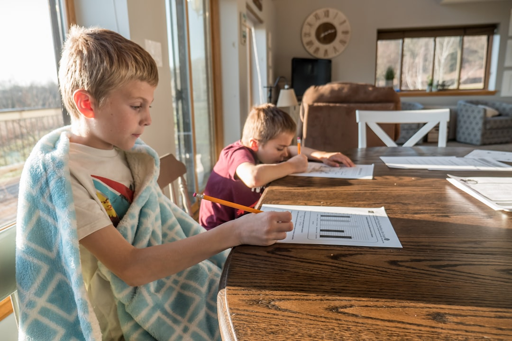
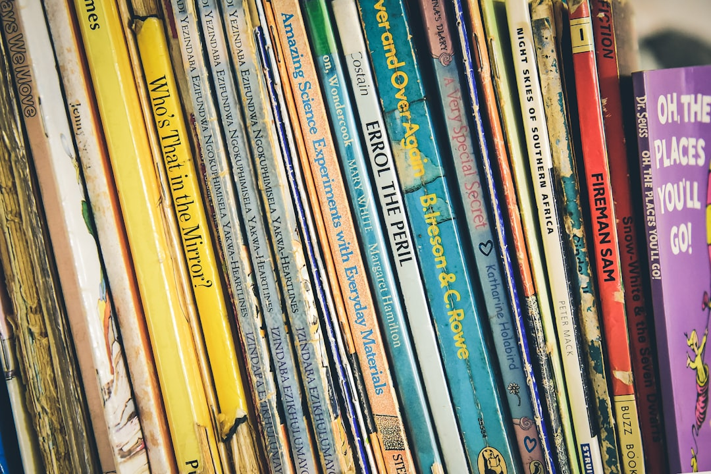

Why I Chose to Homeschool My Kids: The Story Behind Our Homeschool Journey

A mom’s honest reflection on school safety, family values, and the moment I knew homeschooling was the right choice for our family.
Read More →Faith • Homeschool • Homemaking
.png)
Welcome to Honey & Hymns — a place for faith, homeschool, homemaking, encouragement, and the beautiful ordinary moments of family life.
Read the ArticlesA little bulletin board for the week
“Whatever you do, do from the heart, as for the Lord and not for others.”
Colossians 3:23
Read the Reflection →What helps make your homeschool day feel peaceful?
Morning routine — 42%
Reading aloud — 28%
Nature time — 18%
Other — 12%
Why I Started My Own Personal Curriculum (And Why My Kids Are Watching)
How creating a personal curriculum as a homeschool mom is helping me model lifelong learning, curiosity, and biblical wisdom for my children.
Read the Latest Post →New articles, homeschool resources, printables, and other little things are always being added around the Honey & Hymns home.
Explore What's New →Keep an eye out for upcoming Honey & Hymns articles, resources, the next digital magazine, and more.
See What's Coming →A simple way for families to read, learn, pray, and reflect on this Sunday's Gospel together.
Explore This Week's Gospel →The latest Honey & Hymns digital magazine will live here when it's ready.
Open the Magazine →
A mom’s honest reflection on school safety, family values, and the moment I knew homeschooling was the right choice for our family.
Read More →I compared my own parenting experience with what the research says about toddler boys and girls, and the results surprised me.
Read More →
After moving from screen-heavy learning to a Charlotte Mason approach, these are the books filling our homeschool with stories, imagination, and faith.
Read More →Honest reflections from a wife still learning as she goes.
Read More →From organizing portfolios and choosing curriculum to planning lessons and preparing our hearts for a Christ-centered homeschool year, here's how our family gets ready for a fresh start.
Read More →.png)
How creating a personal curriculum as a homeschool mom is helping me model lifelong learning, curiosity, and biblical wisdom for my children.
Read More →I'm so glad you're here. Honey & Hymns was created as a place for moms who want to grow in faith while embracing the beautiful, sometimes messy work of raising a family.
Here you'll find homeschool encouragement, homemaking ideas, Catholic faith resources, simple activities for children, and honest reflections on motherhood.
Visit the Newsletter